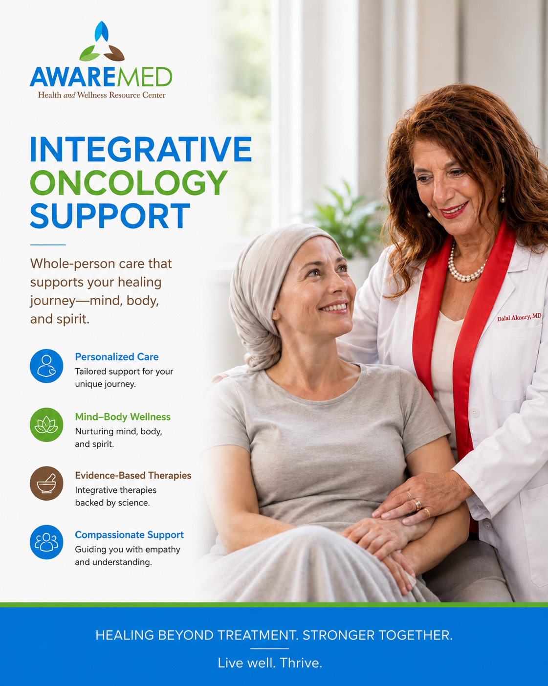

️ Integrative Oncology Support
Compassionate, evidence-informed supportive care designed to complement your conventional cancer treatment, addressing the whole person during one of life's most challenging journeys.

Integrative Oncology Support at AWAREmed
Whole-person care that supports your healing journey, mind, body, and spirit.
Personalized Care
Tailored integrative support for your unique oncology journey alongside your conventional care team.
Mind-Body Wellness
Nurturing mind, body, and spirit throughout treatment and recovery for whole-person resilience.
Evidence-Based Therapies
Integrative therapies backed by clinical science and Dr. Akoury's oncology fellowship training.
Compassionate Support
Guiding you with empathy and understanding through one of life's most challenging journeys.
What Is Integrative Oncology Support?
Integrative oncology is the thoughtful combination of conventional cancer care with evidence-informed complementary approaches that support the whole person, body, mind, and spirit, throughout the cancer journey. At AWAREmed, this is not about replacing conventional treatment. It is about enhancing well-being, supporting resilience, and addressing the many dimensions of health that cancer touches.
Dr. Dalal Akoury, MD brings deep compassion and clinical expertise to oncology support. With a background that includes oncology-related training, she understands both the medical realities and the deeply personal nature of a cancer diagnosis. She works alongside your oncology team to provide supportive, complementary care that respects your current treatment protocol.
AWAREmed's integrative oncology support focuses on optimizing your body's resilience during treatment, supporting recovery afterward, and attending to quality of life, including fatigue, nutritional status, immune function, emotional well-being, and side effect management, with approaches that are safe within the context of your ongoing care.
Potential Benefits
While individual responses vary and no specific outcomes can be guaranteed, this service may support:
Who May Benefit?
This service may be appropriate for individuals including:
- Patients currently undergoing chemotherapy, radiation, or surgery
- Cancer survivors seeking post-treatment recovery support
- Those managing long-term effects of cancer treatment
- Patients seeking whole-person support alongside conventional oncology
- Individuals with a family history looking at preventive strategies
- Those experiencing cancer-related fatigue, pain, or nutritional challenges
The Treatment Process at AWAREmed
Dr. Akoury begins every integrative oncology consultation with a detailed review of your cancer diagnosis, current treatment plan, medications, and overall health status. She coordinates with your oncology team to ensure that all integrative approaches are safe and appropriate within the context of your conventional care. A personalized supportive protocol is designed, which may include nutritional optimization, IV nutrient support, stress and immune support, and lifestyle medicine, adjusted as your treatment evolves.
Frequently Asked Questions
Related Services
Hormone Optimization (BHRT)
Discover how this service can support your health journey.
Learn more →Regenerative Medicine
Discover how this service can support your health journey.
Learn more →Chelation & Detoxification Support
Discover how this service can support your health journey.
Learn more →Take the First Step Toward Better Health
Book a consultation with Dr. Dalal Akoury, MD to discuss a personalized, whole-person care plan.